COS426 Assignment 1Image Processing — Batch Mode
Switch to: Interactive Editor
- (0.5) Brush
- (0.0) Brightness
- (0.5) Contrast
- (0.5) Gamma
- (0.5) Vignette
- (2.0) Histogram equalization
- (0.5) Saturation
- (1.5) White balance
- (2.0) Histogram matching
- (1.0) Gaussian
- (0.5) Sharpen
- (0.5) Edge detect
- (1.0) Median filter
- (2.0) Bilateral filter
- (0.5) Quantize
- (0.5) Random dither
- (2.0) Ordered dither
- (2.0) Floyd-Steinberg dither
- (1.0) Sampling
- (0.5) Translate
- (0.5) Scale
- (1.5) Rotate
- (1.5) Swirl
- (1.0) Composite
- (3.0) Morph
- (3.0) Palette
- (4.0) Paint-by-numbers
- Custom filter
- (1.0) Art Contest
Brush
Given an array of centers of circles, a radius, and a color, my implementation iterates over the square of width 2*radius around each center and recolors the pixel to the given color if its squared distance from the center is less than the radius squared. I found less than worked better than less than or equal to.
Here is an example output of the flower with three blue dots:
{kind=link}
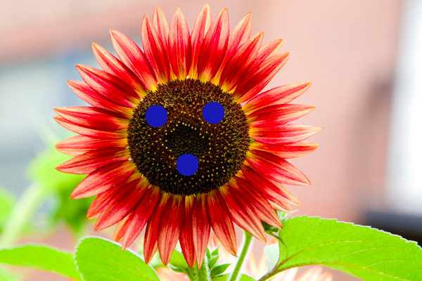
Here is an example output of the town with three white dots:
{kind=link}
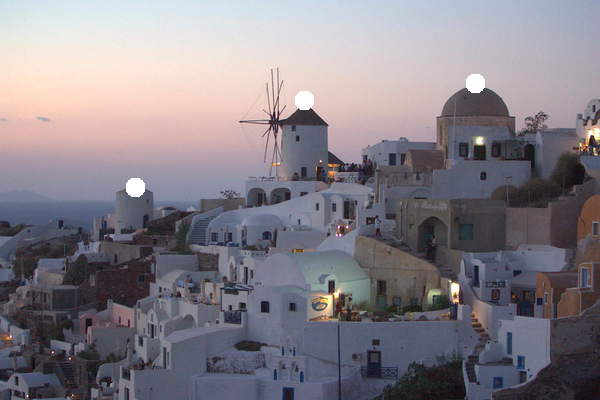
Brightness
This feature was implemented by the course staff. I used it as an example of how to loop over the pixels in an image.
Here is an example output where the image is made brigher with the luminance slider set to 0.3:
{kind=link}

Here is an example output where the image is made darker with the luminance slider set to -0.5:
{kind=link}

I did not encounter any particular challenges in implementing this.
Contrast
Given an image and a contrast ratio, my implementation adjusts the contrast by interpolating between a gray image and the given image according to the formula we were provided.
Here is an example output where the contrast slider set to -1.0:
{kind=link}

Here is an example output where the contrast slider set to 0.7:
{kind=link}
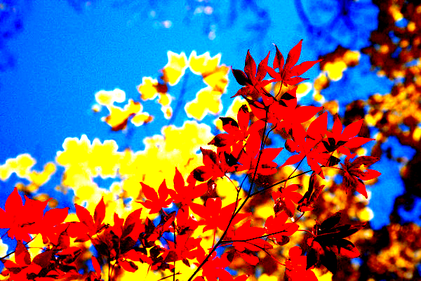
Here is an example output where the contrast slider set to -0.8:
{kind=link}
Gamma
Given an image and the log of gamma, my implementation adjusts the gamma by iterating through each of the pixels and raising each of the RGB values to the gamma power. My output seems to yield higher contrast results with negative log of gammas as compared to the examples which appear more faded but I believe that my implementation is correct.
Here is an example output where the gamma slider set to 1.0:
{kind=link}
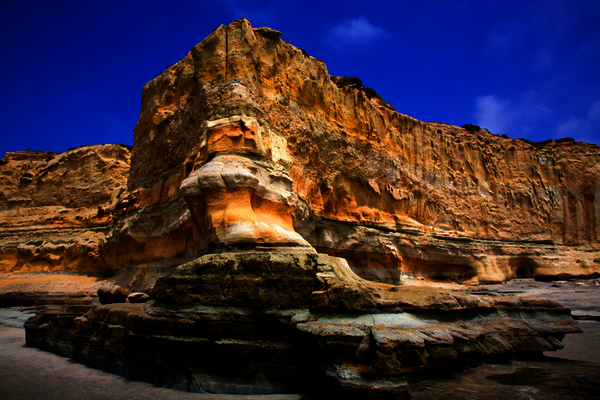
Here is an example output where the gamma slider set to -1.6:
{kind=link}
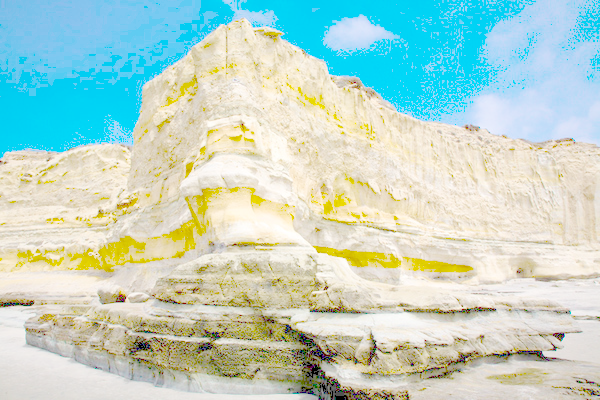
Vignette
Given an image and the inner and outer radii of the vigenette, my implementation adds the vignette by iterating through the pixels and reducing the luminance linearly from inner to outer radius and leaving the pixels within the inner radius unchanged.
Here is an example output where the vigenette goes from 0.25 to 0.25:
{kind=link}
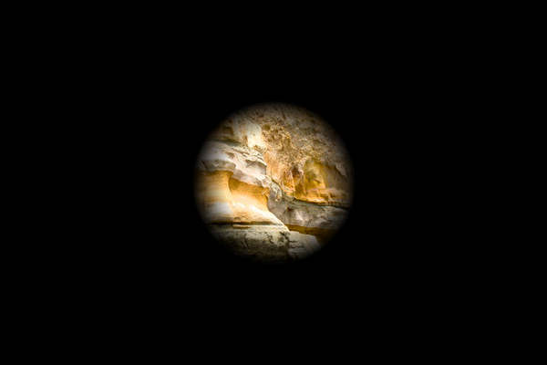
Here is an example output where the the vignette goes from 0.25 to 1:
{kind=link}
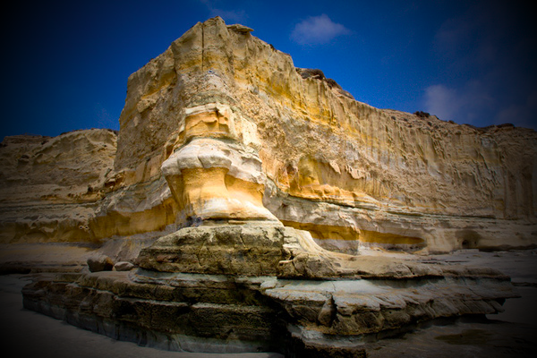
Here is an example output where the the vignette goes from 0 to 0.75:
{kind=link}
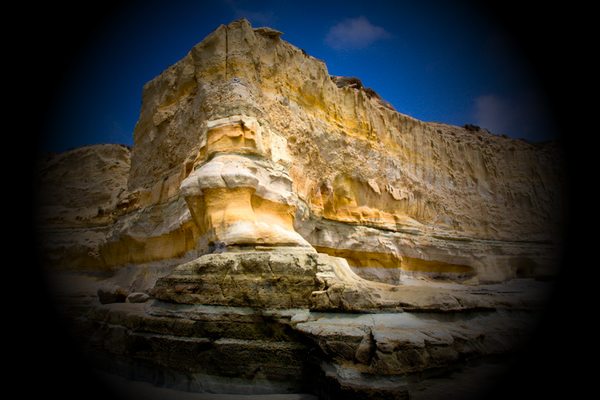
Histogram equalization
Given an image, my implementation follows the given histogram equalization steps, creating a cumulative distribution function for the image over the L values and using it to adjust the L values of the pixels of the image.
Here is an example output where the L histogram of the flower image has been equalized:
{kind=link}
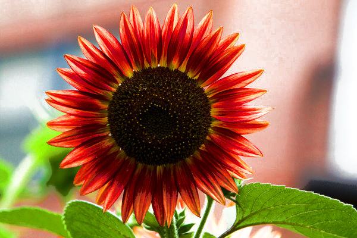
Here is an example output where the L histogram of the leaves image has been equalized:
{kind=link}
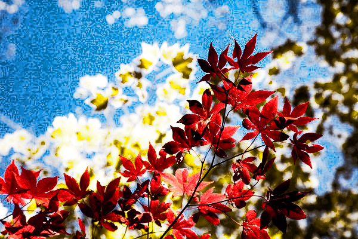
Saturation
Given an image and a saturation ratio, my implementation adjusts the contrast by interpolating between a grayscale version of the image and the original image according to the formula we were provided.
Here is an example output where the saturation slider has been set to 1:
{kind=link}
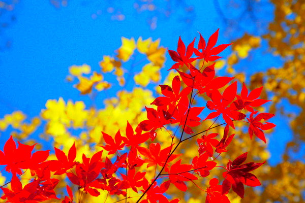
Here is an example output where the saturation slider has been set to -0.5:
{kind=link}
White balance
Given an image and a reference color to white balance against, my implementation uses the method given to us, converting each of the pixels to LMS then dividing by the LMS coordinates of the white color and then converting the pixels back to RGB.
Here is an example output where the grey (0.5,0.5,0.5) has been rebalanced to white:
{kind=link}
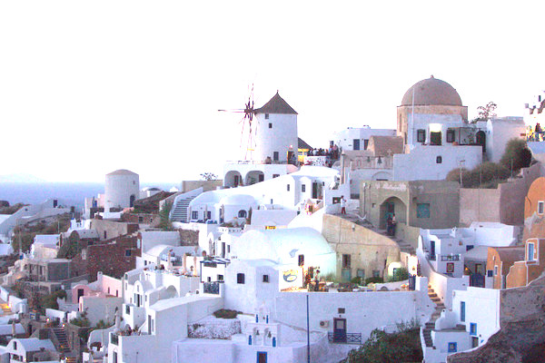
Histogram matching
Given a base image, a reference image, and a value, my implementation performs histogram matching over RGB values if value < 0.5, and over luminance values if value >= 0.5. In both cases it generates the cumulative distribution functions for both images and then creates a correspondance mapping that converts RGB/luminance values from the base image to their corresponding values in the reference image and then uses this correspondance mapping to change the pixels in the base image.
Here is an example output where the luminance histogram of the leaves image has been made to match that of the flower image:
{kind=link}
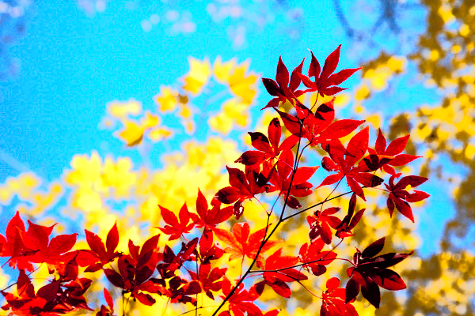
Gaussian
Given an image and a sigma, my implementation creates a new image and using the separable filter detailed in class, gaussian blurs first horizontally then vertically using the sigma parameter. The window radius that the blur kernel is applied over is set to be 3*sigma.
Here is an example output where the gaussian slider has been set to 4:
{kind=link}
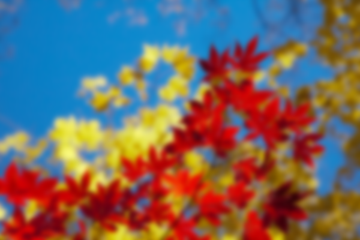
Here is an example output where the gaussian slider has been set to 7:
{kind=link}
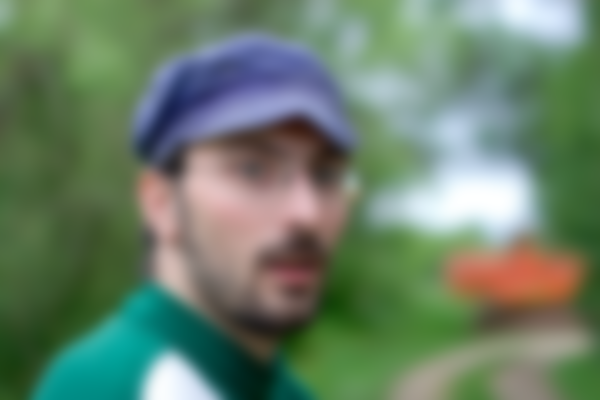
Sharpen
Given an image, my implementation uses the sharpen kernel provided and iterates over the pixels of the image, generating a new image that is a sharpened version of the original image.
Here is an example output where the leaves image has been sharpened:
{kind=link}
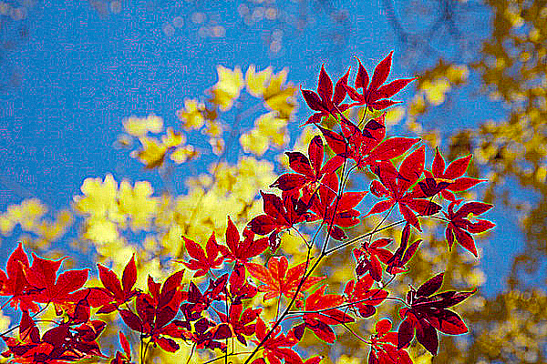
Here is an example output where the woman image has been sharpened:
{kind=link}
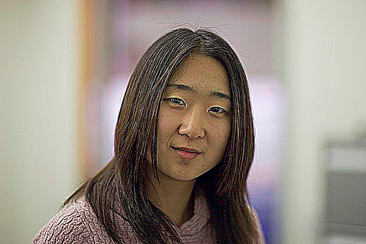
Edge detect
Given an image, my implementation uses the edge kernel provided and iterates over the pixels of the image, generating a new image that highlights the edges of the original image.
Here is an example output of edge detection run on the leaves image:
{kind=link}
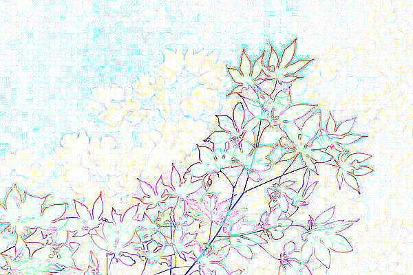
Here is an example output of edge detection run on the woman image:
{kind=link}
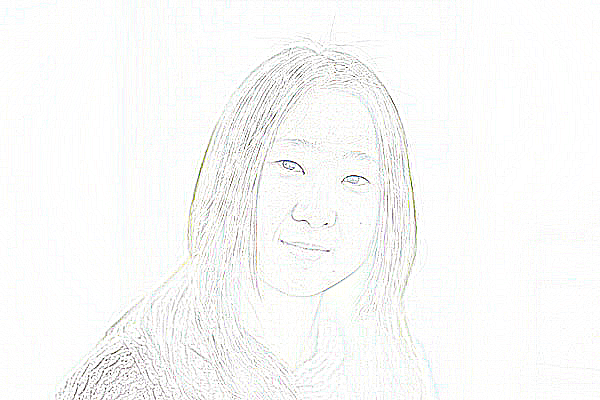
Median filter
Given an image and a window radius, my implementation iterates over the pixels of the image and takes the median R,G,B values (separately) of the pixels inside the window around the current pixel and assigns the corresponding pixel in the new image these median R,G,B values. I also implemented a median filter that chooses the median according to luminance which is currently commented out. The median filter over the RGB channels is very slow for higher window radii but this is to be expected.
Here is an example output where the median filter slider has been set to 3:
{kind=link}

Here is an example output where the median filter slider has been set to 5:
{kind=link}
Here is an example output where the median filter slider has been set to 8:
{kind=link}
Bilateral filter
Given an image, a sigmaR, and a sigmaS, my implementation creates a new image andusing the filter detailed in class, blurs the pixel by taking a weighted average of the pixels within the window around the current pixel with pixels closer in distance and color weighted higher. The window radius that the blur kernel is applied over is set to be 3*max(sigmaR,sigmaS). I found that I had to actually divide sigmaR by sqrt(2)*winR otherwise it appeared almost identical to the Gaussian blur.
Here is an example output where the bilateral filter sliders have been set to 4 and 2:
{kind=link}

Here is an example output where the bilateral filter sliders have been set to 5 and 3:
{kind=link}

Quantize
Given an image and a number of bits, my implementation maps each pixel to the closest available output level.
Here is an example output where the number of bits per R, G, and, B value has been set to 1:
{kind=link}
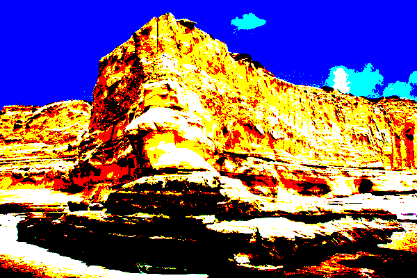
Here is an example output where the number of bits per R, G, and, B value has been set to 3:
{kind=link}
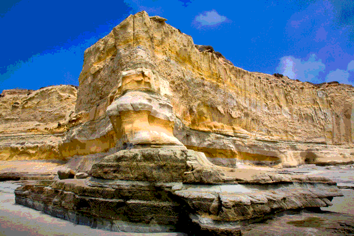
Random dither
Given an image and a number of bits, my implementation adds a random value that scales inversely with the values per channel to each of the RGB channels of each pixel and then maps each adjusted pixel to the closest available output level.
Here is an example output where the number of bits per R, G, and, B value has been set to 1:
{kind=link}
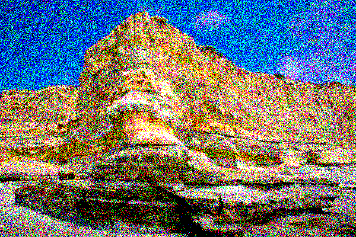
Here is an example output where the number of bits per R, G, and, B value has been set to 3:
{kind=link}
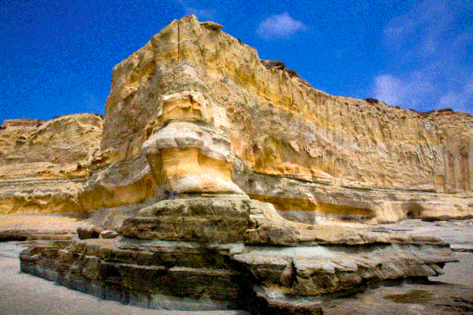
Ordered dither
Given an image and a number of bits, my implementation uses the method provided along with the 4x4 ordered dither matrix provided to adjust the RGB channels of each pixel by an amount computed from its location and the matrix and then maps each adjusted pixel to the closest available output level.
Here is an example output where the number of bits per R, G, and, B value has been set to 1:
{kind=link}
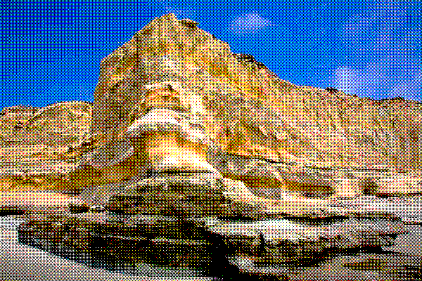
Here is an example output where the number of bits per R, G, and, B value has been set to 3:
{kind=link}

Floyd-Steinberg dither
Given an image and a number of bits, my implementation uses the method provided along with the error diffusion values provided to map each pixel to the closest available output level and then distribute the difference between its original and final values to the pixels as specified in the Floyd-Steinberg error diffusion method.
Here is an example output where the number of bits per R, G, and, B value has been set to 1:
{kind=link}
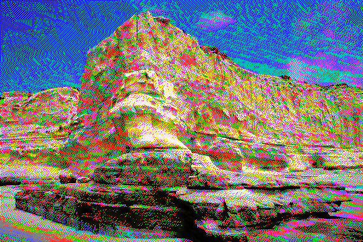
Here is an example output where the number of bits per R, G, and, B value has been set to 3:
{kind=link}
Sampling
Given an image and the x and y coordinates of a pixel, my implementation performs bilinear sampling by using the method provided in class, taking the weighted average of two vertices defining the top edge and the two vertices defining the bottom edge of the rectangle defined by the x and y coordinates, and then taking the weighted average of these two intermediate results. Given an image and the x and y coordinates of a pixel, my implementation performs guassian sampling by using the method provided in class, taking the weighted average of the vertices in the square of radius 1 around the specified location, with weights assigned by the formula provided.
Translate
Given an image and x and y translation values, my implementation translates the image by iterating over the destination image and reverse sampling from the original image using the inverse transformation. Pixels from the original image outside the final image bounds are not sampled and pixels within the final image from outside the original image are made transparent.
Here is an example output where the flower image has been translated by (-317, -182) using point sampling:
{kind=link}
Here is an example output where the flower image has been translated by (-317, -182) using bilinear sampling:
{kind=link}

Here is an example output where the flower image has been translated by (-317, -182) using gaussian sampling:
{kind=link}
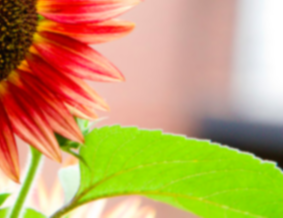
Scale
Given an image and a scale ratio, my implementation scales the image by iterating over the destination image and reverse sampling from the original image using the inverse transformation.
Here is an example output where the mesa image has been scaled by 2.03 using point sampling:
{kind=link}

Here is an example output where the mesa image has been scaled by 2.03 using bilinear sampling:
{kind=link}

Here is an example output where the mesa image has been scaled by 2.03 using gaussian sampling:
{kind=link}

Rotate
Given an image and a rotatation value, my implementation rotates the image by iterating over the destination image and reverse sampling from the original image using the inverse transformation. Pixels that would be sampled from outside the bounds of the original image are made transparent in the final image. The inverse mapping requires rotating in the opposite direction about the center of the image.
Here is an example output where the mesa image has been rotated by 36 degrees using point sampling:
{kind=link}
Here is an example output where the mesa image has been rotated by 36 degrees using bilinear sampling:
{kind=link}
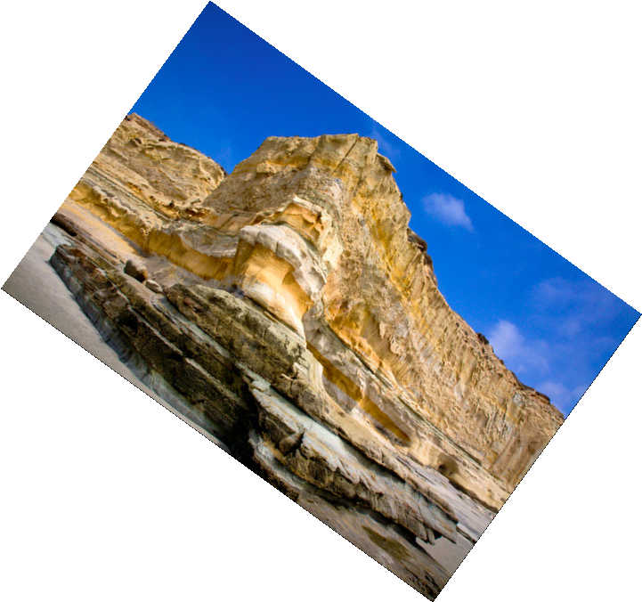
Here is an example output where the mesa image has been rotated by 36 degrees using gaussian sampling:
{kind=link}
Swirl
Given an image and a swirl value, my implementation swirls the image by use of a reverse mapping that essentially rotates the pixels about the center with the amount of rotation scaling with the distance from the center.
Here is an example output where the mesa image is swirled from 0 to 2 pi with the scale (in swirl) set to 30:
){kind=link}

Composite
Given two images, my implementation uses the method provided to create a composite image by averaging the pixels of the foreground and background images based on the alpha value of the pixel from the foreground image.
Here is an example output where the doge image has been composited with the man image:
{kind=link}
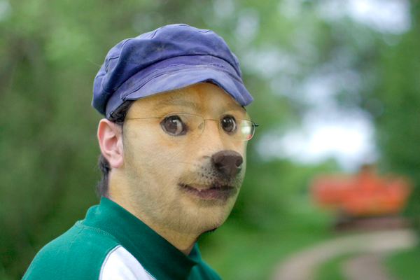
Morph
Given two images, an alpha value, and an array of corresponding pairs of lines, my implementation creates the intermediate warp at time t = alpha between the two images using the method described in class, warping both images to the intermediate lines calculated from the sets of lines and alpha and takes the weighted average of the resulting warped images using the alpha value to determine the relative importance of the two images.
Here is an example output where Ms. Chang morphs into Mr. Halber:
){kind=link}

Palette
Given an image and a number of colors for a palatte, k, my implementation uses the k-means clustering method to calculate k colors that define disjoint clusters of pixels from the original image where each pixel is placed into the cluster that it is closest to as defined by the squared RGB distance, and with each cluster's representative color being the centroid of that cluster. Initially the pixels in the image are randomly assigned to the k-clusters and the representative colors are then calculated to start applying the k-mean clustering process.
Here is an example output where a palette of three colors has been generated from the leaves image:
{kind=link}
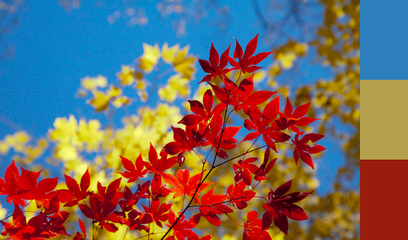
Paint-by-numbers
Given an image and a value from 0.0 to 1.0, my implementation calculates the number of brushes to use (min 1, max 5). I altered the method suggested to change the artistic appearance. The minimum brush radius is always 2 with each consecutive brush size being twice the previous. First I start with a new image as the canvas. I then paint a layer on top with each brush, in decreasing order of brush size. For each layer I create a blurred image that is the original image with a gaussian blur of radius equal to the current layer's brush size. I then calculate a difference grid which gives the RGB distance from each pixel in the original image to the corresponding pixel in the blurred image. A high difference value indicates that the image varies a lot from its neighbors within the window of radius equal to the brush radius. I then iterate over each pixel in the image and if the average difference within the window of radius equal to the brush radius is greater than a constant threshold, I add the location of the pixel in the window with the largest difference value to an array. After iterating over all the pixels, I shuffle the array, iterate over it and draw a spattered circle with the current brush radius at the each pixel's location. To draw each spattered circle, I iterate over the pixels in the window around the center point and, with decreasing probability from the center of the window, set the current pixel to the pixel color of the center pixel's location in the blurred reference image. The first layer of largest brush size ignores the threshhold level and gets painted for every pixel so that none of the original canvas shows.
Here is an example output where the leaves image has been "painted" with 2 brushes:
{kind=link}
Here is an example output where the histogram equalized town image has been "painted" with 4 brushes:
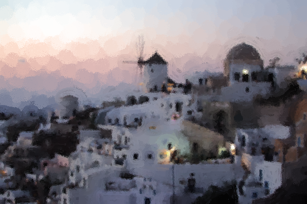
Here is an example output where the histogram equalized golden gate bridge image has been "painted" with 4 brushes:
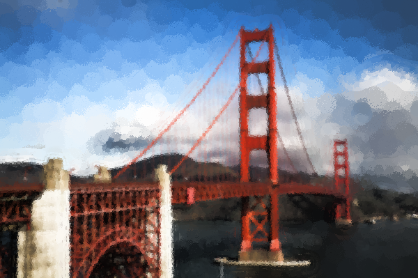
Custom filter
For my custom filter I wanted to create a filter that would produce
results similar to
Van Gogh's Starry Night. I was not exactly sure how to do this but my
thought process was essentially to create a filter that would somehow identify
lines/contours in the image and highlight them. Drawing from some of the reading
from the paint filter link, I found that to do this it would be necessary to
utilize the image gradient. Upon further research I found the Canny edge detection
to be a method that utilizes gradients to perform edge detection. Using these
resources I constructed the following filter:
Create a blank white canvas to start. Iterate through the pixels of the canvas
and for each pixel: if the pixel hasn't been colored, draw a gray line following the
perpendicular to the gradient of the pixels until the line intersects an already
drawn line or it reaches the edge of the canvas. The generation of the gradient
is drawn from the Canny edge detection which uses a Gaussian blurred version of the
image and two convolution masks to determine in which direction yields the highest
pixel difference. There are 4 possible directions, up and to the right, right,
down and to the right, and down. The luminance of the line is chosen by a "pseudorandom"
function that is based on the x and y coordinates of the starting point of the line.
Once done generating the canvas of contour lines, use the lines to adjust the luminance
of the pixels in the original image. The value impacts how much the lines affect the
resulting image. The result is not exactly Van Gogh-like especially since the lines
can only move in 4 different directions, but I believe the filter looks pretty interesting.
{kind=link}
Here is an example output where the filter was applied to a histogram equalized goldengate.jpg with a value of 0.3:
{kind=link}
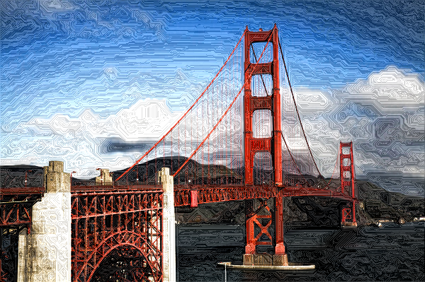
Here is an example output where the filter was applied to leaves.jpg with a value of 0.5:
{kind=link}
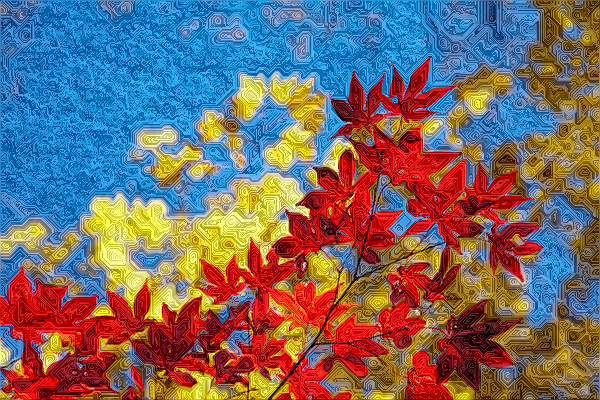
Here is an example output where the filter was applied to doge.jpg with a value of 0.7:
{kind=link}
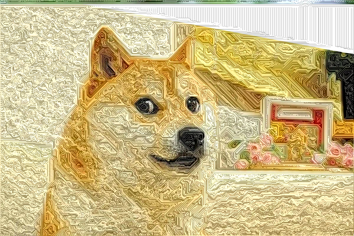
Art Contest
flower.jpg, with a (slightly) incorrect implementation of median filter applied multiple times and with a sharpen filter on top:
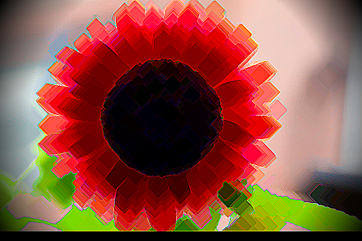
flower.jpg, rotated by 0.7, swirled by 2 pi radians with the swirl scale set to 30
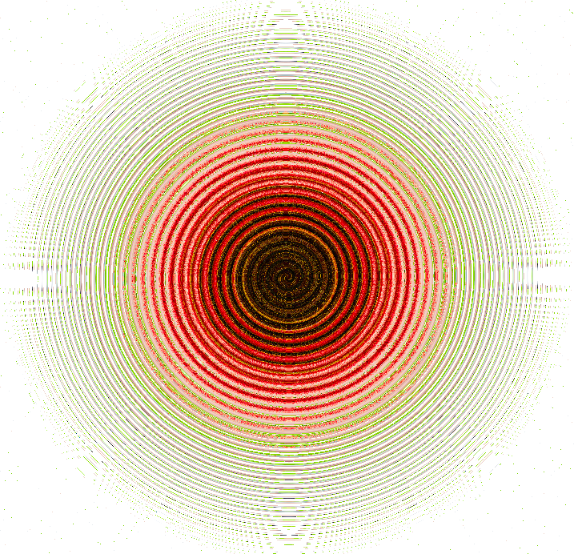
town.jpg, swirled by 2 pi radians with the swirl scale set to 1 and the "radius" replaced by the sin of the radius, white balanced relative to #ffc089, with a gaussian filter of sigma 1 applied, and with a paint filter with 4 brushes applied on top
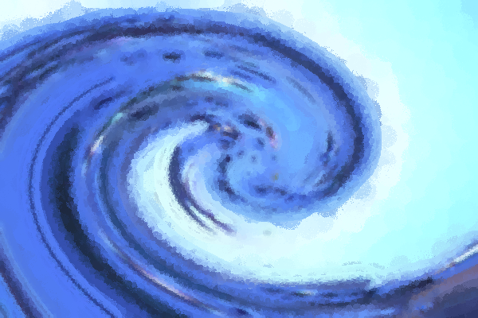
mountain.jpg, with my custom filter applied with a value of 0.4 (My personal favorite)
{kind=link}
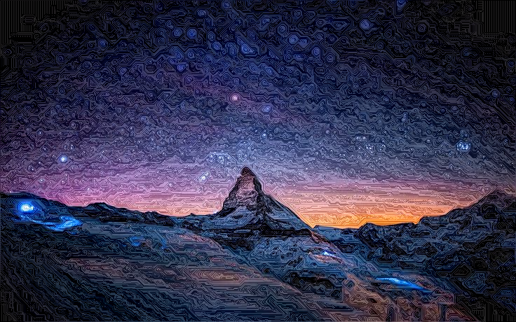